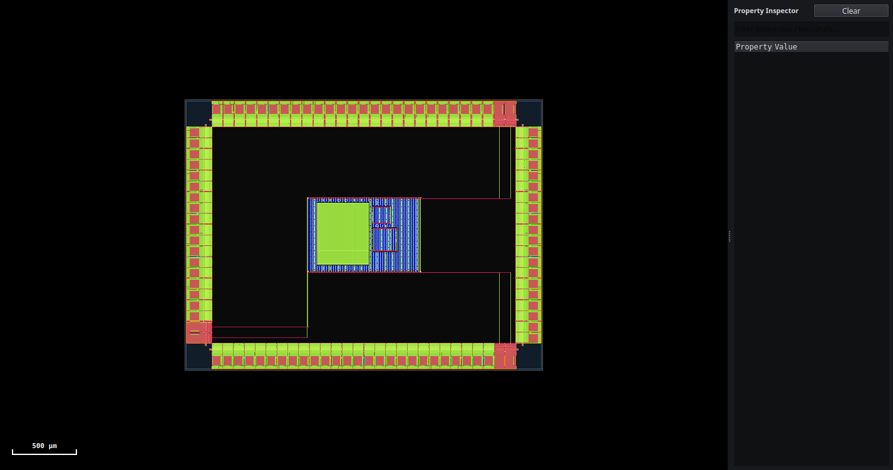
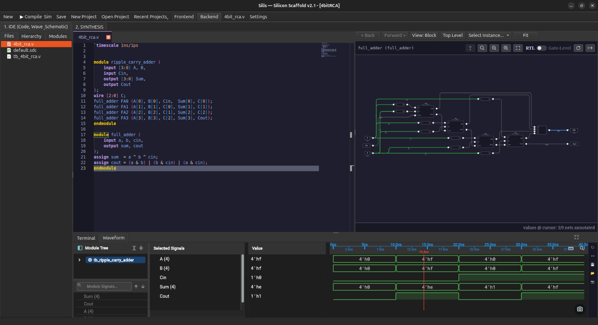
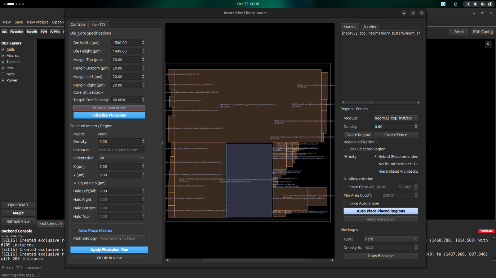
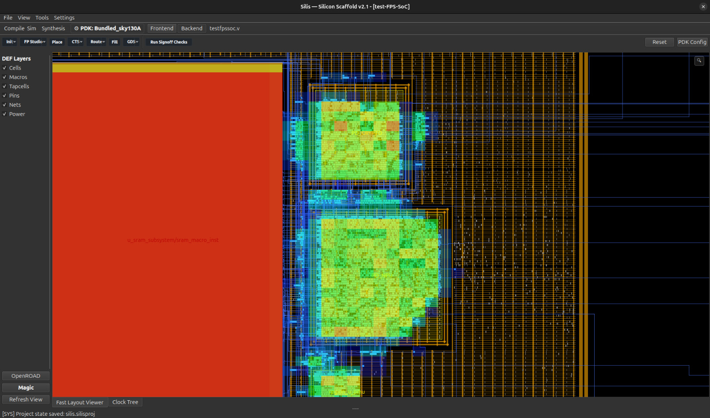
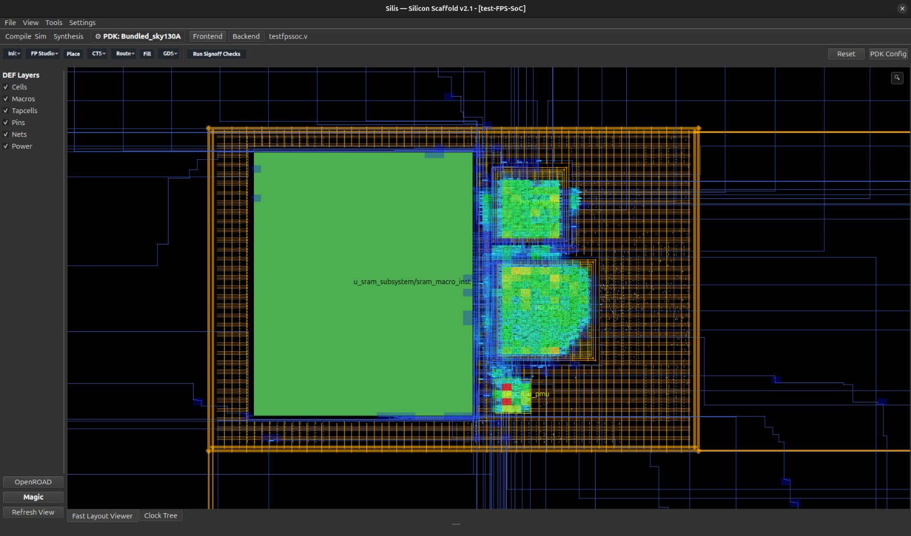
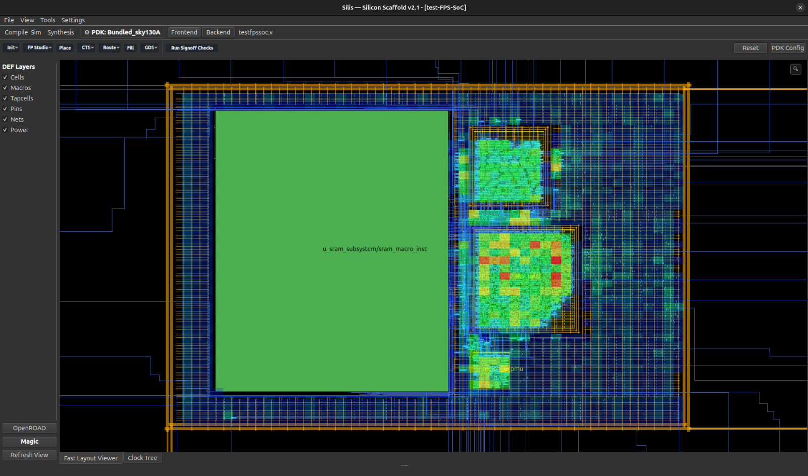
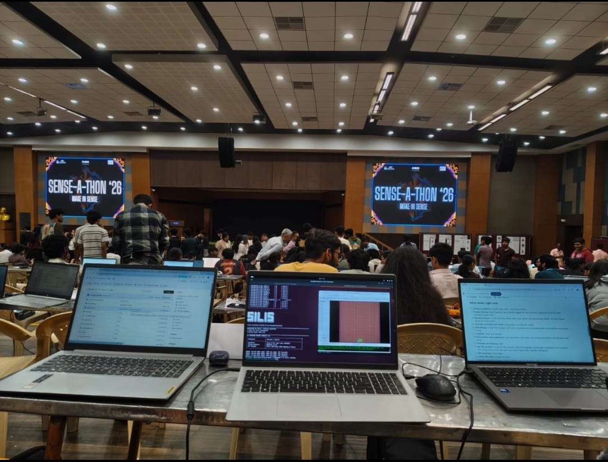
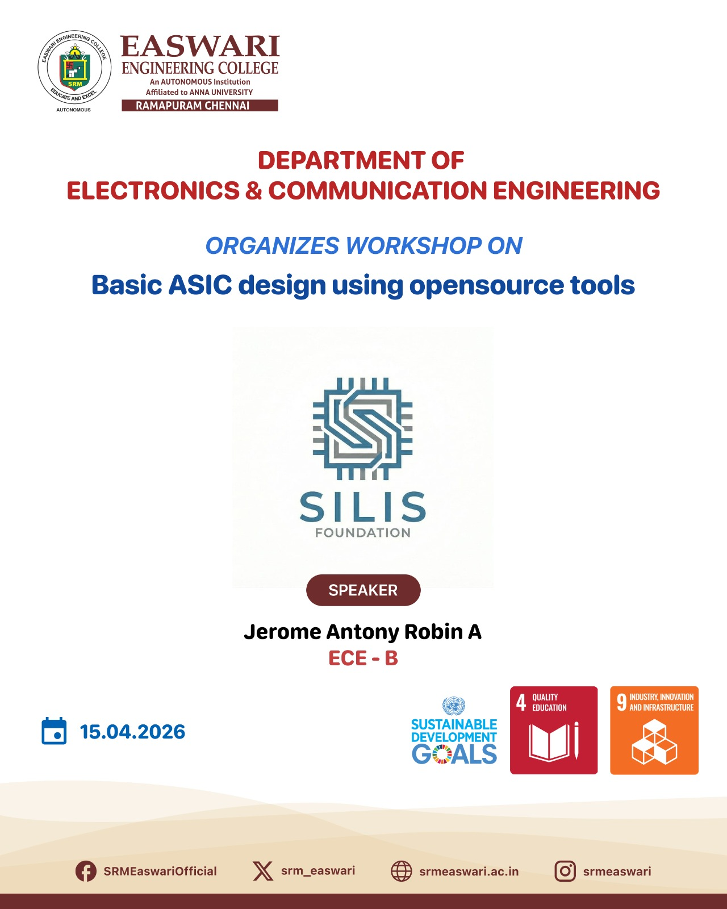

Modular RTL-to-GDSII ASIC Design Suite
An integrated silicon cockpit and programmatic EDA framework bridging HDL specification and physical tapeout. Delivers push-button synthesis, floorplanning, placement, routing, and DRC verification without manual Tcl glue scripting—backed by a Python SDK for automated and agentic physical design flows.
The single biggest blocker for students learning VLSI is toolchain setup. Silis packages everything into a single runnable executable.
Traditional command-line EDA scripts hide what is physically happening. Silis gives immediate visual feedback at every pipeline step.
Commercial ASIC design forces engineers to learn three different proprietary tools and write hundreds of lines of glue scripts.
Students and researchers don't just use GUIs—they write scripts and build AI agents that explore silicon architectures programmatically.






Hover over any card for technical context and backstory.
DevCtrl (v1.py)—a standalone Tkinter GUI featuring numpad keycode translation, a superkey command palette, and a promote button to iterate from pocv1.py through pocv17.py.
.lib, .lef, and .tlef) and SiliconPeeker (Y-axis inverted silicon canvas with density heatmaps).
pocpnrv24.py and pocpnrv25.py. Silis successfully compiled RTL down to a verified GDSII stream file directly from the GUI cockpit.
pocv1 to pocpnrv30b3 at 5,797 lines) and scratch notes. Deleted 69,675 lines of code in one stroke and stabilized root silis.py.
FastLayoutViewer.cpp, FastSchem) bound via pybind11, enabling fluid multi-million gate inspection.
Silis isn't bench-bound theory—it was tested under pressure in intercollegiate hackathons and deployed directly to classrooms.

In a 48-hour competitive innovation challenge, Team Shadowstack (J Amos Jebastin, Santhosh K, Srinath H, Sanjay Kannan A) deployed a complete RISC-V softcore processor with memory interfacing and ALU datapath directly onto the PYNQ-Z2 FPGA.
The team credited Silis IDE as their primary workbench, using it to eliminate toolchain friction, speed up compilation and simulation loops, and verify cycle-accurate hardware behavior under extreme time pressure.

Invited as the sole student Resource Person to deliver a hands-on workshop on end-to-end ASIC design flows using open-source toolchains and the Silis environment.
Covered everything from digital logic specification and Yosys synthesis to automated floorplanning, placement, clock-tree synthesis, and DRC-clean GDSII generation.
Before the July refactor, pocpnrv30b3.py grew to a staggering 5,797 lines of pure Python, containing XML parsers, GUI widgets, PDK crawlers, and OpenROAD subroutines all in one file.
On March 13, 2026, after days of deep debugging, a single commit was pushed with the message: lemme cook. (7096e49e). Four weeks later, the entire cloud Codespaces architecture was functional.
The Git history still contains the original complaints.txt file from July with developer notes like: "undo redo in explorer doesnt work" and "super key gets registered in input-able fields".
Commit 817445c2 (upto gds2 gen!!!!!!) was finalized on February 9 at 17:56 PM, directly fueled by the adrenaline of presenting to Cadence engineers at CIT and RMKCET that same weekend.